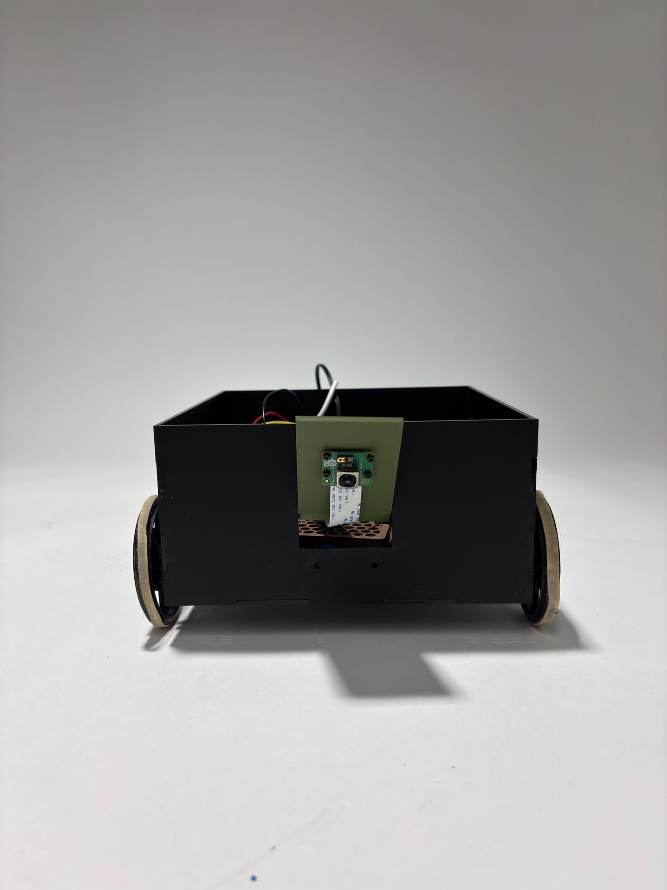
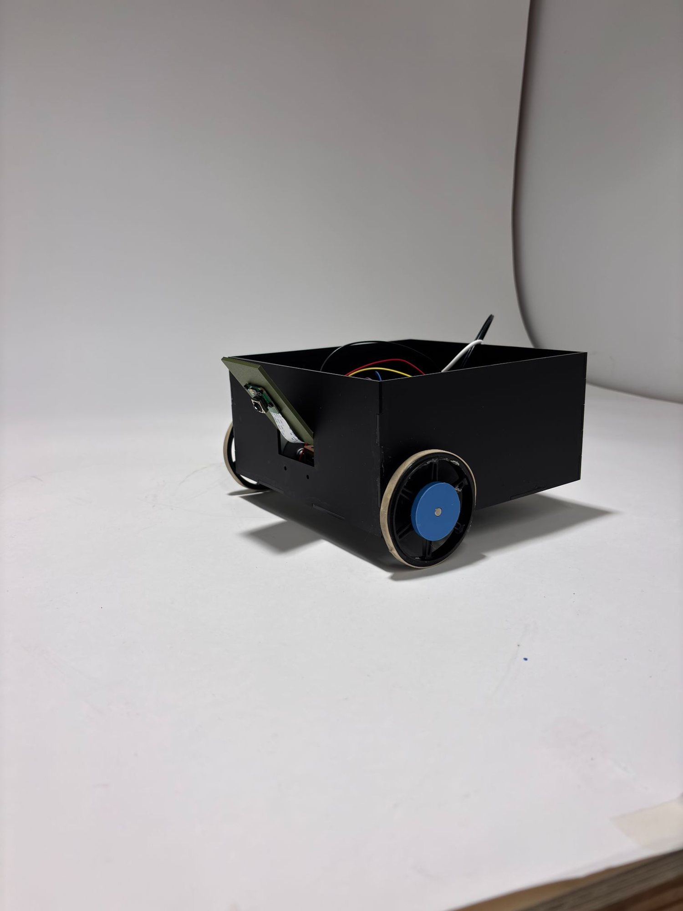
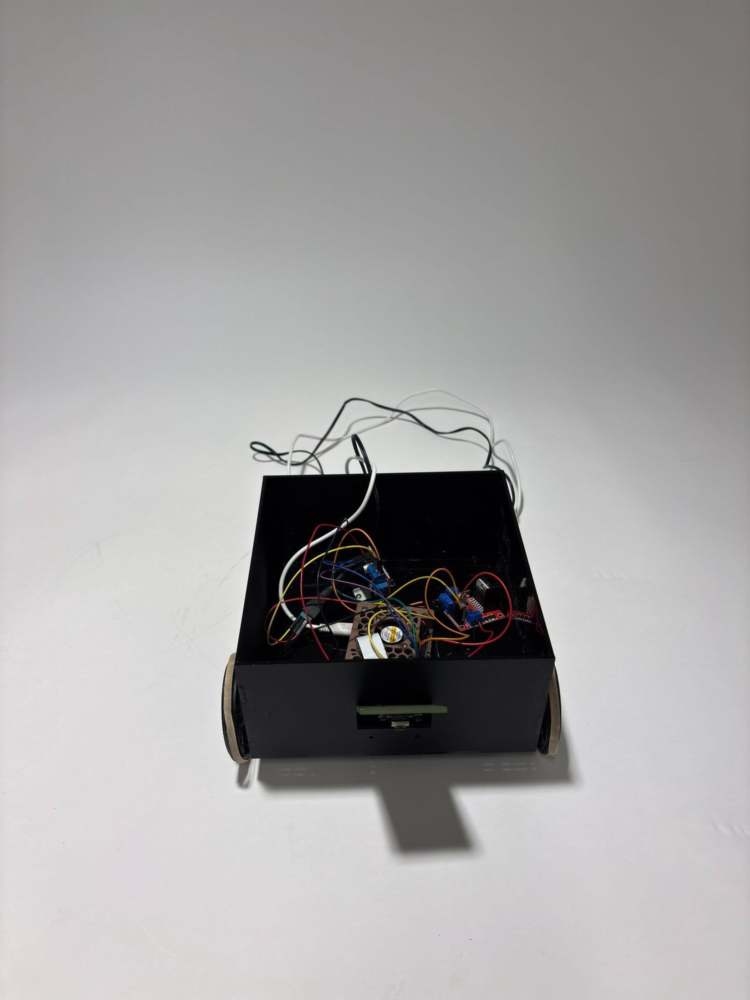
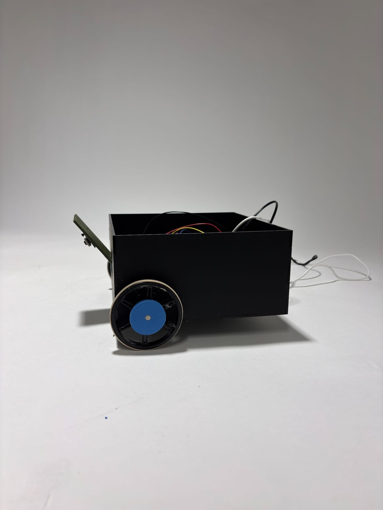
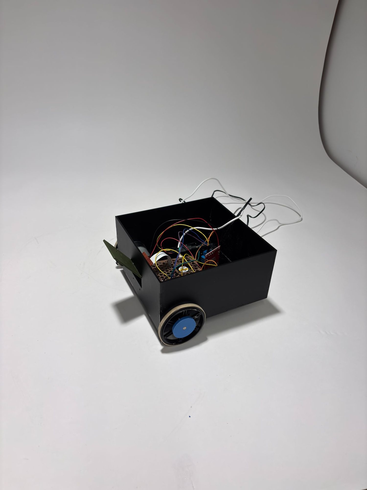

Project analysis
This project involves designing and building a robot that follows a predefined path using a Raspberry Pi Camera as the primary sensing system. The robot must detect and track the line using computer vision rather than IR sensors, and the chassis must be designed and fabricated from scratch without tape or hot glue. While additional sensors may supplement performance, the camera is required for line detection. The system processes live camera frames to identify the line position relative to the robot and adjusts motor speeds accordingly to remain centered on the path.
Follower in use
This robot uses a Raspberry Pi Camera to follow a yellow line on the ground. The camera continuously takes pictures and looks only at the lower part of the image where the line should appear. The program filters the image to detect the yellow color and finds the center of the line. It then compares the line's position to the center of the camera view. If the line is centered, the robot drives straight. If the line shifts left or right, the robot adjusts by slowing one motor and keeping the other faster, causing it to turn back toward the line. If the line is very close to the edge of the frame, the robot makes a stronger correction to avoid losing it. If it cannot find the line for a longer period, it enters a search routine: it moves forward, turns right, turns left, and reverses in a timed pattern to try to relocate the line. If it still cannot find it after two full search cycles, it drives forward for five seconds and then stops.
How it was built
The robot is built on a fully custom chassis fabricated from laser-cut structural panels and mechanical fasteners to ensure rigidity and alignment. All mounting holes were designed in Onshape or measured and drilled precisely to secure the motors, Raspberry Pi, battery pack, and motor driver. A custom 3D-printed camera mount was designed to hold the Pi Camera at a fixed forward-facing angle optimized for line visibility and field of view. The mechanical layout was designed to maintain a low center of gravity and proper wheel alignment to reduce wobble. Wiring was routed cleanly and mechanically secured without adhesive materials, maintaining compliance with the project constraints.
View Python code — OpenCV vision & drive control
import numpy as np
import cv2
from picamera2 import Picamera2
from libcamera import controls
import RPi.GPIO as GPIO
import time
# -----------------------------
# Camera setup
# -----------------------------
picam2 = Picamera2()
picam2.set_controls({"AfMode": controls.AfModeEnum.Continuous})
picam2.start()
time.sleep(1)
# -----------------------------
# Yellow HSV range (calibrated)
# -----------------------------
lower_color = np.array([72, 160, 120])
upper_color = np.array([102, 240, 150])
# -----------------------------
# Motor pins (BOARD numbering)
# -----------------------------
GPIO.setmode(GPIO.BOARD)
GPIO.setwarnings(False)
ENA, IN1, IN2 = 37, 36, 38 # Left motor
ENB, IN3, IN4 = 23, 19, 21 # Right motor
for p in [ENA, IN1, IN2, ENB, IN3, IN4]:
GPIO.setup(p, GPIO.OUT)
GPIO.output(p, GPIO.LOW)
def stop_motors():
GPIO.output(ENA, GPIO.LOW)
GPIO.output(ENB, GPIO.LOW)
def left_forward(on: bool):
GPIO.output(IN1, GPIO.HIGH)
GPIO.output(IN2, GPIO.LOW)
GPIO.output(ENA, GPIO.HIGH if on else GPIO.LOW)
def left_backward(on: bool):
GPIO.output(IN1, GPIO.LOW)
GPIO.output(IN2, GPIO.HIGH)
GPIO.output(ENA, GPIO.HIGH if on else GPIO.LOW)
def right_forward(on: bool):
GPIO.output(IN3, GPIO.HIGH)
GPIO.output(IN4, GPIO.LOW)
GPIO.output(ENB, GPIO.HIGH if on else GPIO.LOW)
def right_backward(on: bool):
GPIO.output(IN3, GPIO.LOW)
GPIO.output(IN4, GPIO.HIGH)
GPIO.output(ENB, GPIO.HIGH if on else GPIO.LOW)
def clamp01(x: float) -> float:
return 0.0 if x < 0.0 else 1.0 if x > 1.0 else x
def pulse_drive_dir(left_on: float, right_on: float, period: float, left_dir: str, right_dir: str):
"""
left_dir/right_dir: 'fwd' or 'rev'
left_on/right_on: seconds ON within this period (0..period)
"""
if left_dir == "rev":
left_backward(left_on > 0)
else:
left_forward(left_on > 0)
if right_dir == "rev":
right_backward(right_on > 0)
else:
right_forward(right_on > 0)
t0 = time.time()
while True:
dt = time.time() - t0
if dt >= period:
break
if dt >= left_on:
GPIO.output(ENA, GPIO.LOW)
if dt >= right_on:
GPIO.output(ENB, GPIO.LOW)
stop_motors()
# -----------------------------
# Vision / filtering knobs
# -----------------------------
kernel = np.ones((5, 5), np.uint8)
MIN_AREA = 250
CENTER_TOL = 5
PULSE_PERIOD = 0.08
BASE_DUTY = 0.30
STEER_GAIN = 1.7
MIN_INNER_SCALE = 0.10
EDGE_THRESH = 0.75
PANIC_INNER_SCALE = 0.08
PANIC_OUTER_BOOST = 1.4
# -----------------------------
# Lost-line behavior (SEARCH)
# After HOLD_TIME w/o line:
# forward 1s -> right 3s -> left 3s -> backward 1s -> repeat
# If 2 full cycles without finding line: forward 5s then stop.
# -----------------------------
HOLD_TIME = 0.4
SEARCH_PATTERN = [
("forward", 1.0),
("right", 3.0), # rotate right: left fwd + right rev
("left", 3.0), # rotate left: left rev + right fwd
("backward", 1.0),
]
MAX_SEARCH_CYCLES = 2
FINAL_FORWARD_TIME = 5.0
lost_mode = False
phase_idx = 0
phase_start_time = None
lost_cycles = 0
last_seen_time = time.time()
last_seen_error = 0
try:
while True:
image = picam2.capture_array("main")
h, w, _ = image.shape
crop_w, crop_h = 600, 450
start_x = max(0, min(w // 2 - crop_w // 2, w - crop_w))
start_y = max(0, min(int(h * 0.65), h - crop_h))
roi = image[start_y:start_y + crop_h, start_x:start_x + crop_w]
blur = cv2.GaussianBlur(roi, (5, 5), 0)
hsv = cv2.cvtColor(blur, cv2.COLOR_BGR2HSV)
mask = cv2.inRange(hsv, lower_color, upper_color)
mask = cv2.morphologyEx(mask, cv2.MORPH_OPEN, kernel)
mask = cv2.morphologyEx(mask, cv2.MORPH_CLOSE, kernel)
contours, _ = cv2.findContours(mask.copy(), cv2.RETR_EXTERNAL, cv2.CHAIN_APPROX_NONE)
found = False
error = 0
if contours:
c = max(contours, key=cv2.contourArea)
if cv2.contourArea(c) >= MIN_AREA:
M = cv2.moments(c)
if int(M["m00"]) != 0:
cx = int(M["m10"] / M["m00"])
center_x_px = crop_w // 2
error = cx - center_x_px
found = True
last_seen_time = time.time()
last_seen_error = error
# reset search state
lost_mode = False
phase_idx = 0
phase_start_time = None
lost_cycles = 0
if not found:
now = time.time()
# Flicker hold: keep using last steering
if now - last_seen_time <= HOLD_TIME:
print("Line Flicker -> Hold")
error = last_seen_error
found = True # treat as found for steering below
else:
# Enter / continue search mode
if not lost_mode:
lost_mode = True
phase_idx = 0
phase_start_time = now
lost_cycles = 0
# If 2 full cycles done -> forward 5s then stop
if lost_cycles >= MAX_SEARCH_CYCLES:
print("Search failed (2 cycles) -> Forward 5s then stop")
t_end = time.time() + FINAL_FORWARD_TIME
while time.time() < t_end:
base_on = PULSE_PERIOD * BASE_DUTY
base_on = max(PULSE_PERIOD * 0.20, base_on)
pulse_drive_dir(base_on, base_on, PULSE_PERIOD, "fwd", "fwd")
cv2.imshow("mask", mask)
cv2.imshow("frame", roi)
key = cv2.waitKey(1) & 0xFF
if key == ord('q') or key == 27:
raise KeyboardInterrupt
stop_motors()
break
phase, dur = SEARCH_PATTERN[phase_idx]
if (now - phase_start_time) >= dur:
phase_idx += 1
if phase_idx >= len(SEARCH_PATTERN):
phase_idx = 0
lost_cycles += 1
phase_start_time = now
phase, dur = SEARCH_PATTERN[phase_idx]
base_on = PULSE_PERIOD * BASE_DUTY
base_on = max(PULSE_PERIOD * 0.20, base_on)
if phase == "forward":
print("Line Lost -> Search: Forward")
pulse_drive_dir(base_on, base_on, PULSE_PERIOD, "fwd", "fwd")
elif phase == "right":
print("Line Lost -> Search: Right (left fwd, right rev)")
pulse_drive_dir(base_on, base_on, PULSE_PERIOD, "fwd", "rev")
elif phase == "left":
print("Line Lost -> Search: Left (left rev, right fwd)")
pulse_drive_dir(base_on, base_on, PULSE_PERIOD, "rev", "fwd")
else: # backward
print("Line Lost -> Search: Backward")
pulse_drive_dir(base_on, base_on, PULSE_PERIOD, "rev", "rev")
cv2.imshow("mask", mask)
cv2.imshow("frame", roi)
key = cv2.waitKey(1) & 0xFF
if key == ord('q') or key == 27:
break
continue
# -----------------------------
# NORMAL line following
# -----------------------------
center_x = crop_w / 2.0
e_norm = (error / center_x)
e_mag = clamp01(abs(e_norm))
base_on = PULSE_PERIOD * (BASE_DUTY * (1.0 - 0.20 * e_mag))
base_on = max(PULSE_PERIOD * 0.20, base_on)
if abs(error) <= CENTER_TOL:
print("On Track")
left_on = base_on
right_on = base_on
else:
inner_scale = 1.0 - (STEER_GAIN * (e_mag ** 1.3))
inner_scale = max(MIN_INNER_SCALE, inner_scale)
if error < 0:
print("Turn Right")
left_on = base_on
right_on = base_on * inner_scale
else:
print("Turn Left")
left_on = base_on * inner_scale
right_on = base_on
if e_mag > EDGE_THRESH:
if error < 0:
right_on = base_on * PANIC_INNER_SCALE
left_on = min(PULSE_PERIOD, base_on * PANIC_OUTER_BOOST)
else:
left_on = base_on * PANIC_INNER_SCALE
right_on = min(PULSE_PERIOD, base_on * PANIC_OUTER_BOOST)
pulse_drive_dir(left_on, right_on, PULSE_PERIOD, "fwd", "fwd")
cv2.imshow("mask", mask)
cv2.imshow("frame", roi)
key = cv2.waitKey(1) & 0xFF
if key == ord('q') or key == 27:
break
except KeyboardInterrupt:
pass
finally:
stop_motors()
GPIO.cleanup()
cv2.destroyAllWindows()
try:
picam2.stop()
except Exception:
passReflection
This project was successful in demonstrating a working camera-based line-following robot, but the most valuable part of the experience was troubleshooting the electrical system. We encountered significant issues with the H-bridge and DC motors, including inconsistent motor behavior and moments where the motors would not respond at all. Instead of immediately replacing components, we systematically debugged the system ourselves. Using a multimeter, we checked voltage levels, continuity, GPIO outputs, and motor driver connections to isolate the problem. This process helped us identify wiring mistakes and understand how the H-bridge controls motor direction and power delivery.
Gallery




